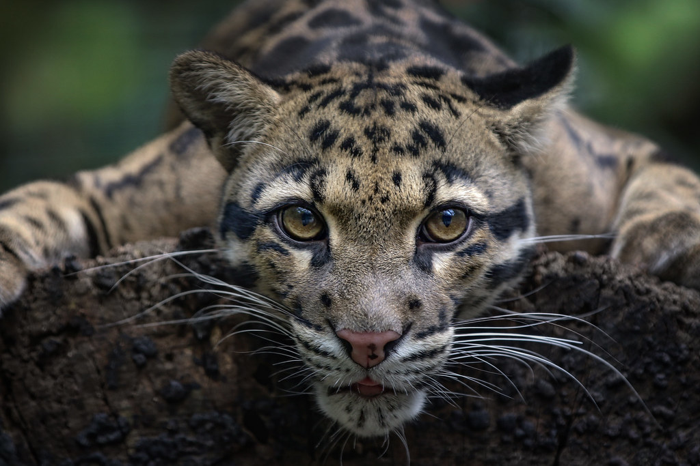
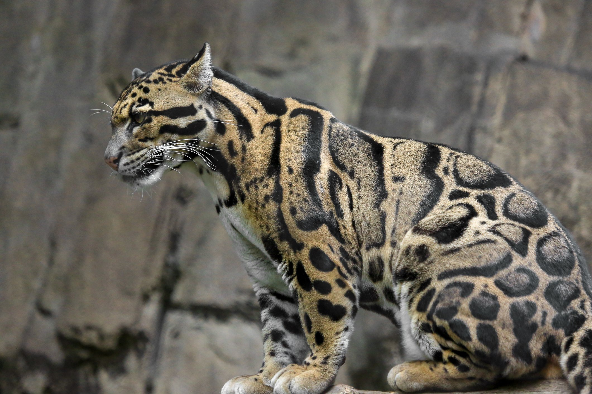

Herzlich Willkommen zu meinem Steckbrief über den Nebelparder.
Name: Nebelparder (Neofelis nebulosa)
Klasse: Säugetiere
Ordnung: Raubtiere
Familie: Katzen
Kopf-Rumpf-Länge: 60-100cm
Gewicht:16-23kg
Lebenserwartung: 8-12 Jahre
Fellzeichnung: große, dunkle, unregelmäßig geformte Flecken auf gelblichem bis gräulichem Grund an den Flanken; kleine, einfarbig schwarze Flecken an Beinen und Kopf
Nahrung: Hirsche, Schweine, Stachelschweine, Affen; Vögel, Schlangen und andere Kleintiere
Verbreitungsgebiet: Südostasien
Lebensraum: tropische und subtropische Primär- und Sekundärwälder, Buschwälder, hohes Grasland und Mangrovensümpfen
Lebensgewohnheiten: scheu, einzelgängerisch, geht nachts auf die Jagt, bester Kletterer unter den Katzen
Tragzeit: ca. 3 Monate
Wurfgröße: 2-5 Jungtiere


Quelle:
Wikipedia